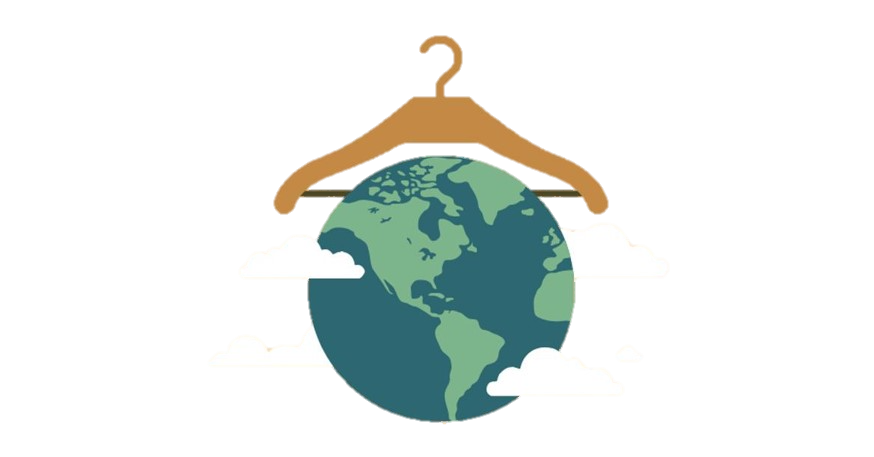

Global Environmental Impact of
Fast Fashion Production & Consumerism

What is Fast fashion?
rapid design, production, distribution, and marketing of clothing ... cheaper clothing
What does this mean?
consumers are quick to dump clothes when a new trend surfaces

Before we dive into the environmental impact of fast fashion,
let's get to know some of the trends!

How do the fashion trends change overtime?
The traditional idea that "pink is for girls" and "blue is for boys" has been increasingly challenged.
Now, you see men wearing colors and patterns that were once considered feminine—like polka dots, hearts, and yellow floral.
Can you believe that the amount of water used to manufacture a pair of jeans (8,000 litres) is equivalent to one person’s drinking water for roughly seven years ?


What is the extent of the environmental implications of fast fashion production?
The map visualizes the environmental impact of top fast fashion-producing countries. Data is sourced from Sustainable Fashion , covering waste production 🗑️ (kg), water usage 💧 (liters), and carbon footprint 👣 (MT) from 2010 to 2024.
Can you also believe that fast fashion is responsible for 10% of the global annual carbon footprint , which is more than the emissions from all international flights and maritime shipping combined?

Which fashion materials cause the largest environmental impact?
The fashion industry is the second-largest industrial polluter, releasing 1.2 billion tonnes of carbon emissions annually. Beyond landfill waste, CO₂ emissions, water pollution, and microfibre pollution further contribute to its environmental impact.
Below is the carbon footprint of each country based on fashion material production. Data is sourced from Sustainable Fashion , measured in megatonnes (MT).
Average Carbon Footprint: MT
How does waste generation differ by year and brand?
An estimated 92 million tonnes of textiles waste is created globally by fast fashion out of the 100 billion produced garments
every year (Earth.Org).
The waste generation from the dataset is based on clothings made from plastic-based textiles.
The data was collected from Plastic-Based Textiles in Clothing Industry
Take a look at the amount of waste generated over time by different brands!
Where should we go on from now?
Let's raise awareness!
- Reusing or purchasing secondhand clothing
- Participating in clothing rentals
- Advocating for a "wear more than once" mentality, rather than discarding items after a single use
Our Team and Data References
Meet the Team
Farah Mikati
Program: Math & Stats Double Major, CS Minor
Year: 4
Fav Brand: Aritzia
Jeanine Ohene-Agyei
Program: CS Specialist, Math Minor
Year: 4
Fav Brand: Zara
Jenny Lin
Program: Data Science Specialist
Year: 4
Fav Brand: Lululemon